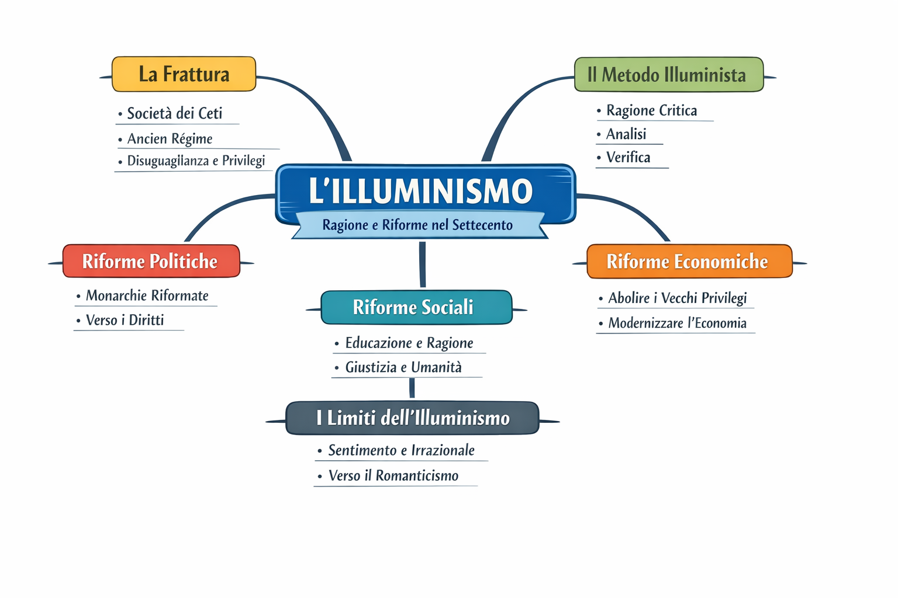

La frattura
La frattura
Perché la società dei ceti non regge più?
Apri la lezione →Il metodo
Il metodo
Come lavora davvero la ragione illuminista?
Apri la lezione →Riforme politiche
Riforme politiche
Come cambia l'idea di potere?
Apri la lezione →Riforme economiche
Riforme economiche
Come si ripensa la ricchezza?
Apri la lezione →Riforme sociali
Riforme sociali
Giustizia, privilegi, istruzione.
Apri la lezione →Sintesi finale
Sintesi finale
Il ripasso breve ma strutturale.
Apri la lezione →Orientamento
Che cosa trovi qui
- Lezioni complete e indicizzate
- Vocabolario essenziale
- Saperi irrinunciabili per il ripasso
- Appunti locali e modalità concentrazione
Ordine del modulo
Una sequenza chiara
- La società dei ceti
- Il metodo illuminista
- Le riforme politiche
- Le riforme economiche
- Le riforme sociali
- Vocabolario, nuclei essenziali, sintesi
Mappa concettuale
Vista rapida del modulo

Chiusura
Un finale che apre
Il punto non è sapere soltanto che cosa sia stato l’Illuminismo. Il punto è capire perché a un certo momento la ragione diventa il criterio con cui giudicare società, leggi, privilegi e sapere.
Apri la sintesi finale